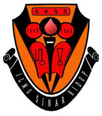
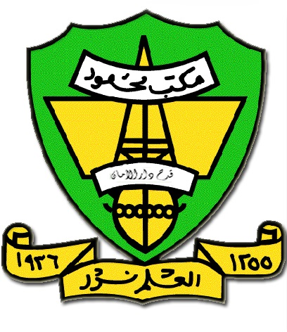
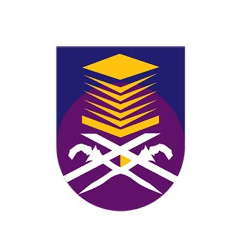

SK SYED SHEH
MMKM
UITM

SKSS stand for Sekolah Kebangsaan Syed Sheh that located in Kupang, Baling. I was started go to this school when i was 10 years old. At that time, i was in Year 4 and the school place me at the second class out of four based on my previous mid year exam result on my previous school. I was able to get along well with my classmates and enjoy my class until i graduated from that school. Thankfully, i got 4A 1B in my UPSR (Ujian Pencapaian Sekolah Rendah)

Maktab Mahmud Kuala Muda was my secondary school in 5 years from Form 1 until Form 5. I get to get in to that school by using my UPSR result. It is located at Kuala Muda, Kedah. Maktab Mahmud has 14 branch around Kedah and i apllied in Kuala Muda. I got 7A 2B 2C in my PT3 (Pentaksiran Tingkatan 3) when i was in Form 3. Besides, when i was in Form 4 i take examination that student in Form 4 have to take which is it called SMAMM that stands for (Sijil Menengah Agama Maktab Mahmud). In that examination i got (Jayyid). When i was in form 5, i take SPM (Sijil Pelajaran Malaysia) and get 3A, 4B, 3C. It is sure a long journey that never ending.

When i graduated from my secondary school, i apllied for UPU based on my SPM result. My first choice was Diploma in Information Management and unfortunately i got it and placed at UiTM Kedah. I was totally grateful that it is not so far from my home and it is such an opportunity for me. Currently i`m in my final year at UiTM Kedah.